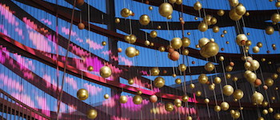

Digital Earth Scalers
Distributed Computing
Earth Observations
Social Web
Our mission is to innovate services in Earth Sciences,
tailored for data-intensive applications.
Welcome to the next generation of web & cloud infrastructures
Our landmarks
Operations support
We deliver and maintain operational solutions, we operate Cloud services with reactive user support and timely customer service.
Cloud Platform
The new Platform economy is opening up perspectives for e-Science. We've built Terradue Cloud Platform to empower data-intensive workflows.
Earth System Science
Our users are researchers, engineers and system integrators in Earth Sciences, with needs to extract more knowledge from Earth observations.

Partner programs
We've tailored Partner Programs aimed at supporting joint Business Development on Terradue Cloud Platform. We team-up to address new challenges.
Developer tools
We engineer APIs and open source tools to enable the community with scalable scientific processors and hosted processing services.

Data-as-a-Service
Our Data Agency technology provides users' applications with smart & fast access to Earth data, via mirroring, caching or remote link.

Digital marketplaces
We are actors of the Research Continuum, helping our partners to curate and deliver scientific information, from raw data to publication.
Web 2.0 innovation
Our solutions are designed to run and scale-out globally, they are natively part of the Web as a Platform. We deliver for fast community building.
Our direction:
solutions to deploy scalable applications,
anywhere, anytime
Solutions that transform
how people exploit Earth Science data
Our skills & expertise levels-up the digital earth
We've built Terradue Cloud Platform on the principles developed for the data-driven economy
Good quality, reliable and interoperable datasets, shared with no geographical restrictions
Connectivity to fast Internet and Infrastructures to reach the data and run massive processing
A platform for users to develop knowledge and practices to meet the demands of eScience
A platform connected to public sector, boosting two-way technology & knowledge transfer
A platform to support Earth Sciences in adopting new data services in the digital era
Rome Office
Terradue Srl
Via Giovanni Amendola, 46
00185 Rome
Italy
Headquarters, founded in 2006
Terradue Srl is addressing the Earth Sciences research & education sector, with core competencies aimed at engineering distributed systems & Cloud services, providing consultancy for international organisations, and developing partner programs for Terradue's Open Source Software & Open Standards strategy.
Contact us
Oxford Office
Terradue UK Ltd
Atlas Building R27
Rutherford Appleton Laboratory
Harwell Oxford, OX11 OQX
UK
Operating subsidiary, since 2011
Terradue UK Ltd is an operating subsidiary for the Climate Change market, with core competencies aimed at leveraging Open Web and e-Infrastructure components, in support of Terradue's Space & Innovation strategy.
Phone: +39 0699341786
email: info at this domain
LinkedIn
Share with us what matters when it comes to professional networking, skills & economic trends spotting, and promotion of business insights
Facebook
Learn about Terradue's story and key milestones, keep track of the company events, and have a feel of the people and the team spirit
Twitter
Follow with us the company wide interests for earth sciences, distributed computing, web standards & tools for collaborative eScience